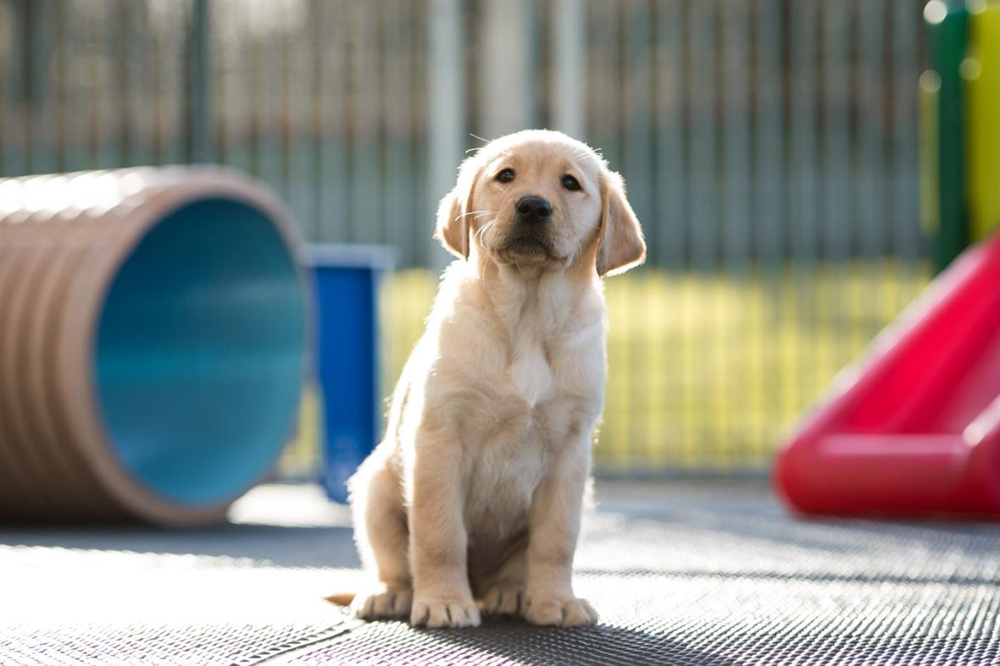

Tова е моят град Бургас!

t’s not surprising that the Labradoodle has gained such popularity so quickly.
Originally developed to be hypoallergenic guide dogs, the first planned crosses of Poodles and Labrador
Retrievers were arranged by the Royal Guide Dogs Association of Australia.
The result was a smart and sociable dog who not only possessed a nature appropriate for
guide dogs but also had a low-shedding coat. While the hybrid is not yet achieving consistent
results in coat or temperament, they’re wildly popular and affectionate dogs

А това съм аз!

моето училище
играя

И моята стая !